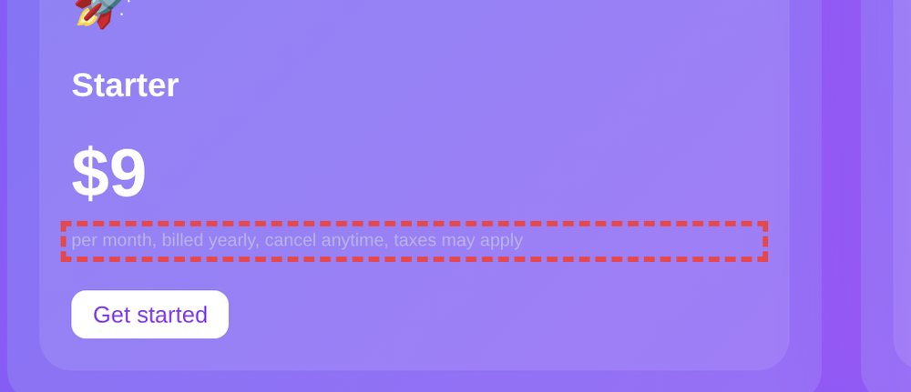
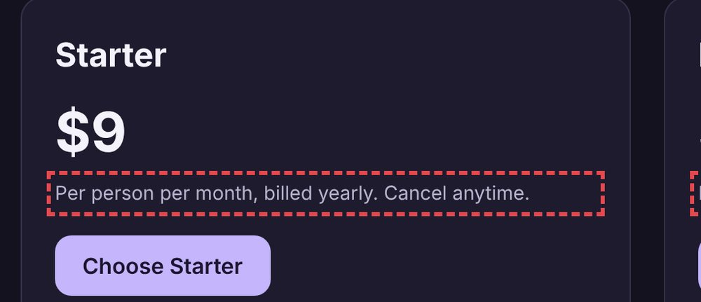

Grey text on a gradient
Small text needs 4.5:1 against what is really behind it, gradients included.


The number
- Before
- 1.57 : 1 at 10 pxmeasured against the rendered pixels behind the text (#9D7FF6)
- After
- 8.38 : 1 at 14 pxagainst a solid card colour
Why it happened. Light lavender text sat on a semi-transparent card over a purple gradient. It looks soft and on-brand in a screenshot; for most readers it is barely there.
A note on our own tool. Our own 66-check script passed this page's contrast check. Like most automated checkers, it cannot read one background colour from a gradient, so it skips the text. We found it by sampling the rendered pixels. That is why the checklist says “measure”, not “trust the tool”.
The fix
.plan { background: #1E1B2E; } /* solid surface, not glass */
.note { font-size: 14px; color: #B9B4CF; }Check your own page
Pick the text colour and the colour directly behind it from a screenshot, then use any contrast checker. Do this on gradients and images by hand.
Where these numbers come from. One pricing page an AI tool built from a single prompt, measured in Chromium at 1440 × 900 and 390 × 844 on 24 November 2026, before and after fixing exactly what the checks reported (38 → 66 of 66). Both pages are public.
Before pageAfter pageGuide: Colour contrast ratio: what passes WCAG 2.2